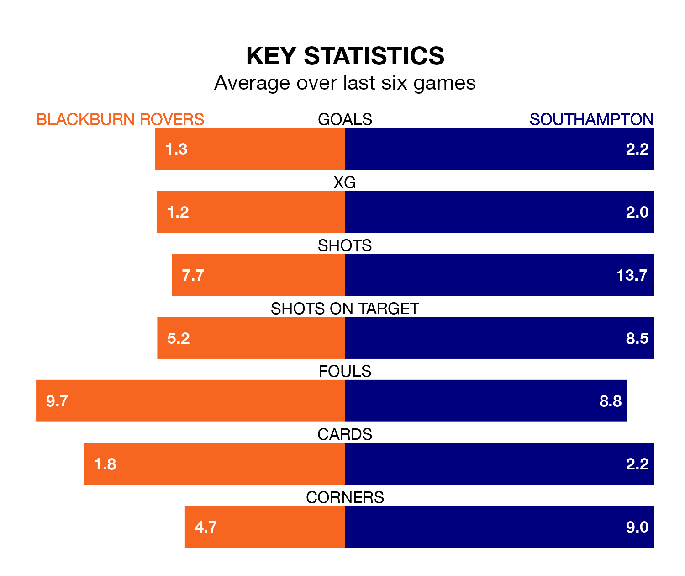

Southampton travel to Ewood Park for Saturday's match against Blackburn Rovers looking to bounce back from defeat last time out in EFL Championship.
The Saints, who sit fourth in the league after 38 games, fell to a 3-2 away defeat to Ipswich Town on Monday.
They face a Blackburn side who picked up a win in their last match, a 5-1 victory against Sunderland, and who sit 17th in the table.
With 76 goals in 38 games so far this season, Southampton are the league's third-highest scorers with 2.0 goals per game. And they are conceding fewer than average, letting in 51 goals at a rate of 1.3 per game.
Blackburn, meanwhile, are average scorers, with 1.4 goals per game. They have conceded 1.6 goals per game.
In Samuel Szmodics, Rovers have the league's sharpest shooter so far this season. He has notched 23 goals in 38 appearances.
His goal rate of one every 146 minutes is slightly quicker than that of Adam Armstrong, the Saints' top scorer with a goal every 158 minutes, and a total of 20 goals in 38 games.
The hosts are in disappointing form in EFL Championship, with one win and three draws from their last six games.
With two wins and a draw over that period, the away side's form is slightly better – they have taken seven points from 18, compared to Blackburn's six.
Saturday's match will be refereed by Craig Pawson, who has taken charge of one EFL Championship game so far this season, issuing no red cards and booking seven players. He has not awarded any penalties.
He is yet to oversee a match featuring either Blackburn or Southampton this season.
Updated: 16:41 (UTC), 04/04/24